Diners in India no longer choose a restaurant only for the food. They choose the place that gives them something to remember, share and come back for, while owners need spaces that cost less to run and earn more per square foot. These are the restaurant design trends we see shaping F&B spaces across India right now, from our work on 3,500+ projects, with notes on how to use each one without dating your restaurant.
1. Multi-Themed Spaces: A New Experience Every Visit
Restaurants are moving away from one fixed theme towards several moods under one roof: brunch in a bright, plant-filled nook, cocktails in an industrial-style lounge, dinner in a warmer dining room. Guests return to explore a different “chapter” each time, which means more repeat visits and more shareable moments.
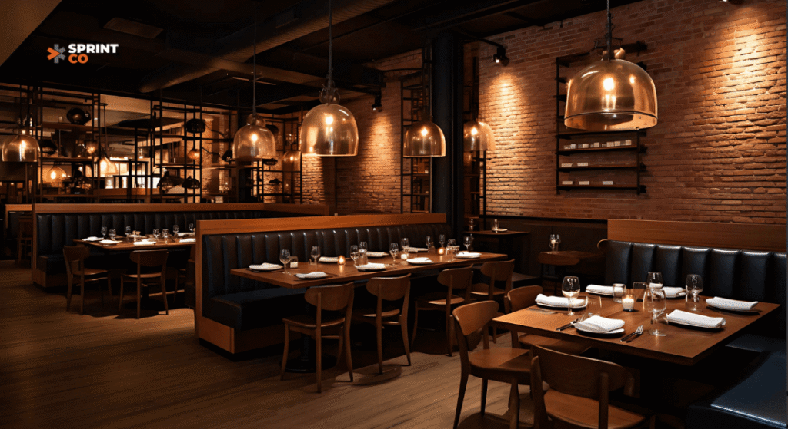
2. Micro Dining: Small Spaces, Big Impact
Compact eateries of around 300 sq ft, such as Bombay Daak, The Village Shop and Sun and Moon, show how much a small, intentional space can do. Lower rent and lean operations mean faster ROI, the intimacy creates memorable moments, and the format is easy to replicate across dense cities.
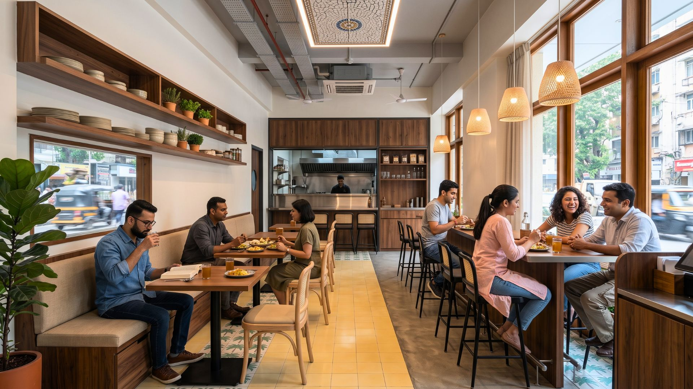
3. Multi-Brand Kitchens: One Kitchen, Several Brands
Co-branded outlets run several brands, often including delivery-only ones, from a single kitchen. Operators such as Maiz and Harvest have shown how shared kitchens make each square foot work harder. The design challenge is a back of house and pickup area that can serve multiple menus without chaos.
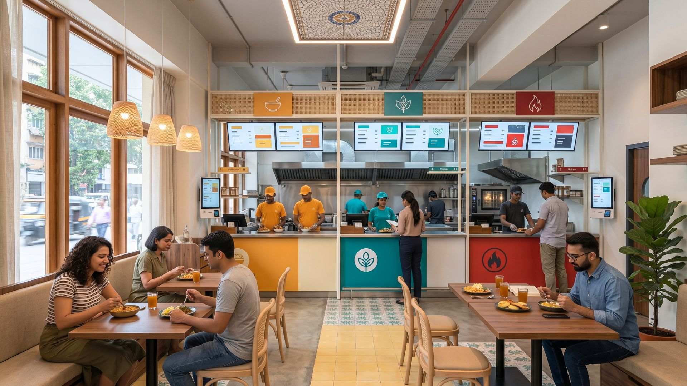
4. Eatertainment: Where Dining Meets Play
Dining venues are adding bowling, games, VR and live performance, turning a meal into an outing. Guests stay longer, spend more and talk about it online. See how we designed DDUCKPIN, India's first duckpin bowling bistro, and our guide to family entertainment centre design.
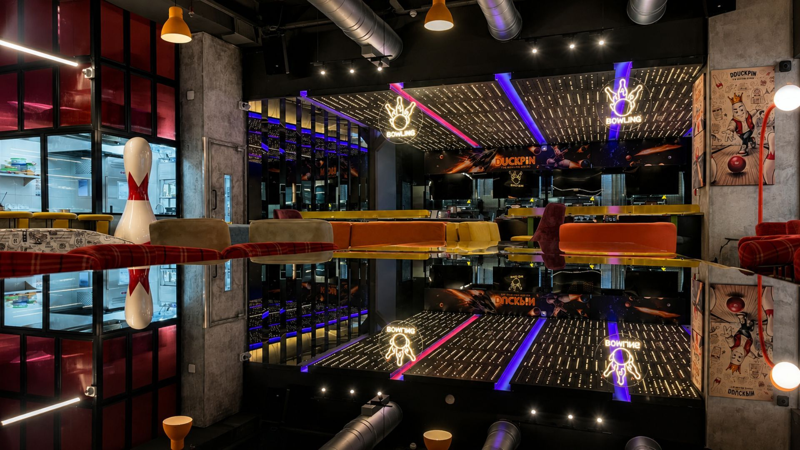
5. Bold, Shareable Decor, Used With Restraint
Neon signs, bold wallpapers, murals and eye-catching patterns turn guests into your marketing team. The trend that lasts is restraint: one or two strong moments that photograph well, set within a calm room, rather than every wall competing for attention.
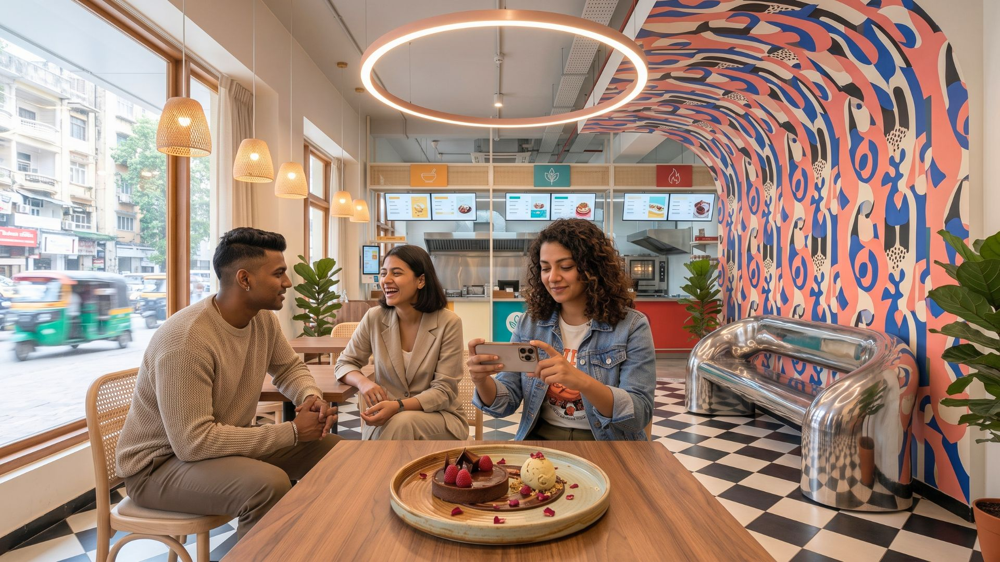
6. Natural, Rustic and Biophilic Materials
Rattan furniture, stoneware, earthy tones, timber, vertical gardens and hanging plants make spaces feel calm and grounded, a welcome contrast to busy cities. Cosy, rustic interiors help guests feel at home and encourage longer, more relaxed visits.
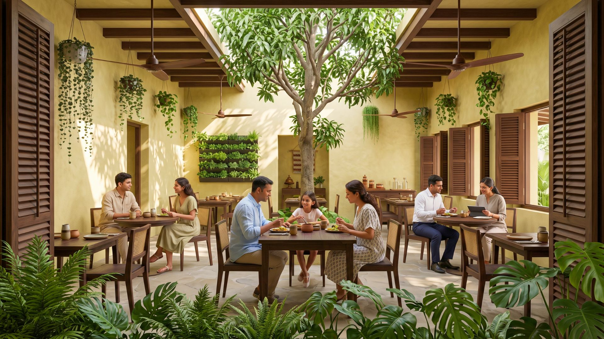
7. Regional and Local Inspiration
Indian culture is shaping decor in fresh ways: Rajasthani bazaar colour, Kerala backwater calm, festival motifs from Durga Puja to Onam. Working with local artists, artisans and producers adds authenticity, supports the community and gives the space a story no chain can copy. Read more in designing restaurants for the Indian customer.
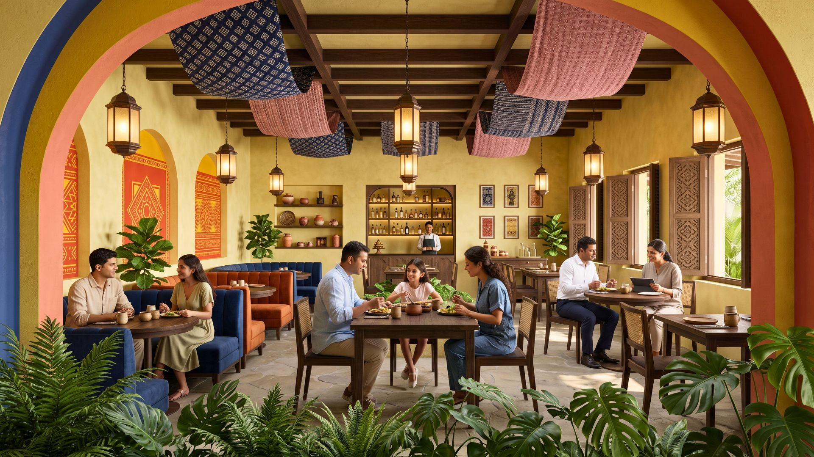
8. Smart Materials That Make Small Spaces Feel Bigger
Spaciousness is sensory, not just structural. The right materials make a compact outlet look brighter and larger:
- Lighter woods: birch and light oak on tabletops, cladding and ceilings reflect light and add warmth without weight.
- Metal accents: brushed bronze and matte black frames and trims add structure and durability in high-traffic zones.
- Compact laminate and quartz: easy to clean, and their smooth finishes bounce light around counters and bars.
- Layered textures: mix matte, gloss, woodgrain and metal for depth, and avoid heavy dark finishes that visually shrink a room.
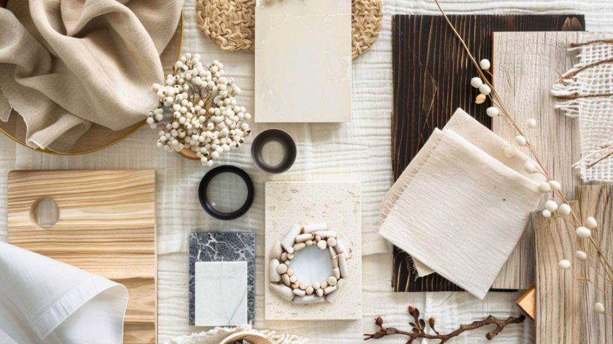
9. Technology Built Into the Room
Charging points at tables, ordering tablets and QR menus, digital payment and strong Wi-Fi are now expected, especially in cafés where guests work. The best spaces build these in quietly rather than adding them later. See how AI is changing restaurant design.
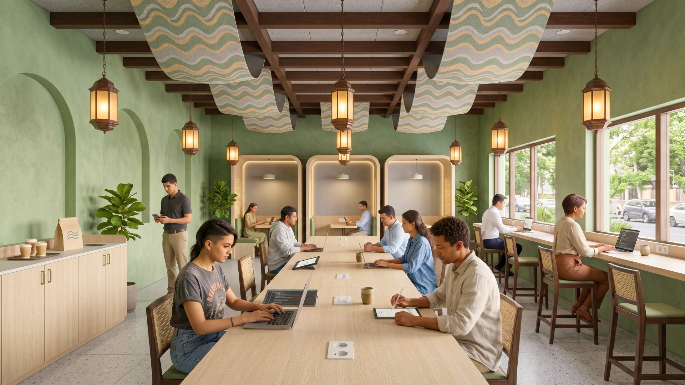
10. Statement Ceilings
Ceilings have become a focal point: sculptural forms, suspended plants and bold lighting installations that guests notice the moment they walk in, while hiding services above.
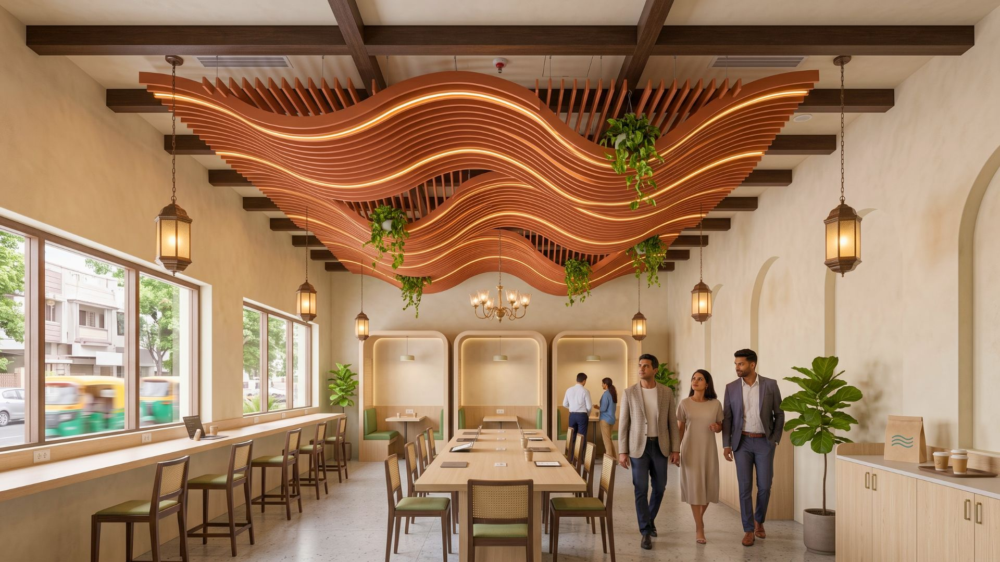
11. Washrooms That Match the Brand
Marble, smart mirrors, touchless fittings and spa-like lighting show that the brand cares about detail. A great washroom is one of the most-photographed rooms in many premium restaurants.
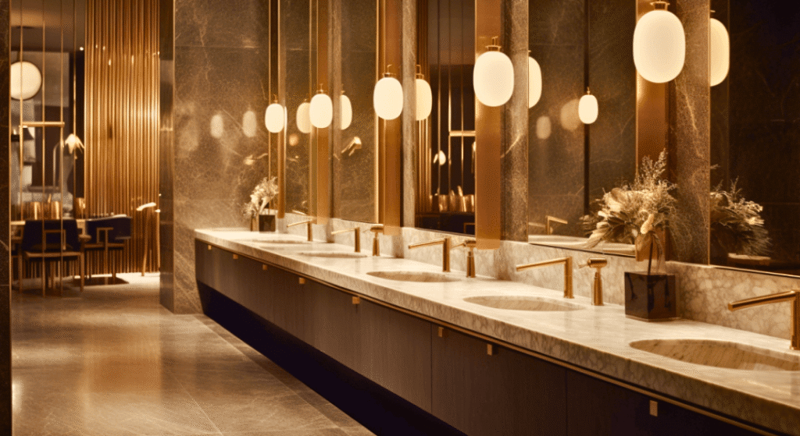
12. Sustainability, Upcycling and Hygiene
Restaurants use a lot of water and electricity, so efficient lighting, HVAC and equipment cut both carbon and running costs. Upcycled and reclaimed materials give unique character while reducing waste. And guests now expect visible hygiene: open kitchens or transparent prep areas build trust.
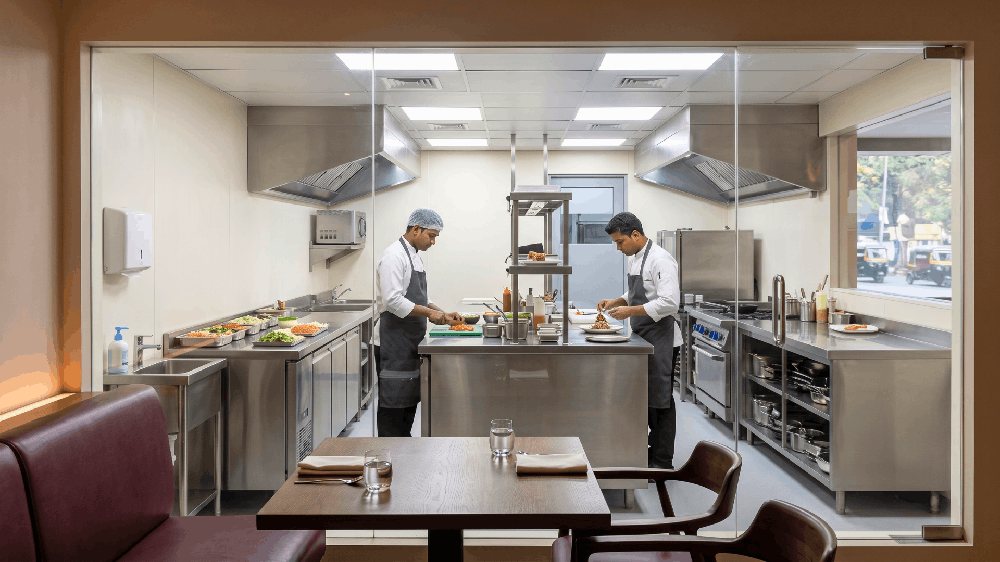
How to Use Trends Without Dating Your Restaurant
Timeless design outperforms short-lived fads. Build the base of the space (layout, materials, lighting, kitchen) to last, and express trends through elements that are easy to change: art, textiles, accessories, menus and a single feature wall. For bars specifically, read our bar and cocktail lounge design trends; for practical ideas, see restaurant interior design ideas.
Planning a restaurant that will still feel right in five years? SprintCo designs and builds restaurants, cafés, bars and QSRs across India. Talk to our team.